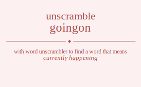

The word found after unscrambling goingon means that currently happening, .

The word found after unscrambling goingon means that currently happening, .
You can also find solutions for different combinations of letters in goingon like goingon goingno goinogn goinong goinngo goinnog goignon goignno goigonn goigonn goignno goignon goiongn goionng goiognn goiognn goionng goiongn goinngo goinnog goingno goingon goinong goinogn gonigon gonigno goniogn goniong goningo goninog gongion gongino gongoin gongoni gongnio gongnoi gonoign gonoing gonogin gonogni gononig gonongi gonnigo gonniog gonngio gonngoi gonnoig gonnogi goginon goginno gogionn gogionn goginno goginon gognion gognino gognoin gognoni gognnio gognnoi gogoinn gogoinn gogonin gogonni gogonin gogonni gognino gognion gognnio gognnoi gognoin gognoni gooingn gooinng gooignn gooignn gooinng gooingn goonign gooning goongin goongni goonnig goonngi googinn googinn goognin goognni goognin goognni gooning goonign goonnig goonngi goongin goongni goningo goninog gonigno gonigon goniong goniogn gonnigo gonniog gonngio gonngoi gonnoig gonnogi gongino gongion gongnio gongnoi gongoin gongoni gonoing gonoign gononig gonongi gonogin gonogni giongon giongno gionogn gionong gionngo gionnog giognon giognno giogonn giogonn giognno giognon gioongn gioonng gioognn gioognn gioonng gioongn gionngo gionnog giongno giongon gionong gionogn ginogon ginogno ginoogn ginoong ginongo ginonog gingoon gingono gingoon gingono gingnoo gingnoo ginoogn ginoong ginogon ginogno ginonog ginongo ginnogo ginnoog ginngoo ginngoo ginnoog ginnogo gigonon gigonno gigoonn gigoonn gigonno gigonon gignoon gignono gignoon gignono gignnoo gignnoo gigoonn gigoonn gigonon gigonno gigonon gigonno gignono gignoon gignnoo gignnoo gignoon gignono gioongn gioonng gioognn gioognn gioonng gioongn gionogn gionong giongon giongno gionnog gionngo giogonn giogonn giognon giognno giognon giognno gionong gionogn gionnog gionngo giongon giongno ginongo ginonog ginogno ginogon ginoong ginoogn ginnogo ginnoog ginngoo ginngoo ginnoog ginnogo gingono gingoon gingnoo gingnoo gingoon gingono ginoong ginoogn ginonog ginongo ginogon ginogno gnoigon gnoigno gnoiogn gnoiong gnoingo gnoinog gnogion gnogino gnogoin gnogoni gnognio gnognoi gnooign gnooing gnoogin gnoogni gnoonig gnoongi gnonigo gnoniog gnongio gnongoi gnonoig gnonogi gniogon gniogno gnioogn gnioong gniongo gnionog gnigoon gnigono gnigoon gnigono gnignoo gnignoo gnioogn gnioong gniogon gniogno gnionog gniongo gninogo gninoog gningoo gningoo gninoog gninogo gngoion gngoino gngooin gngooni gngonio gngonoi gngioon gngiono gngioon gngiono gnginoo gnginoo gngooin gngooni gngoion gngoino gngonoi gngonio gngnoio gngnooi gngnioo gngnioo gngnooi gngnoio gnooign gnooing gnoogin gnoogni gnoonig gnoongi gnoiogn gnoiong gnoigon gnoigno gnoinog gnoingo gnogoin gnogoni gnogion gnogino gnognoi gnognio gnonoig gnonogi gnoniog gnonigo gnongoi gnongio gnnoigo gnnoiog gnnogio gnnogoi gnnooig gnnoogi gnniogo gnnioog gnnigoo gnnigoo gnnioog gnniogo gnngoio gnngooi gnngioo gnngioo gnngooi gnngoio gnnooig gnnoogi gnnoiog gnnoigo gnnogoi gnnogio ggoinon ggoinno ggoionn ggoionn ggoinno ggoinon ggonion ggonino ggonoin ggononi ggonnio ggonnoi ggooinn ggooinn ggoonin ggoonni ggoonin ggoonni ggonino ggonion ggonnio ggonnoi ggonoin ggononi ggionon ggionno ggioonn ggioonn ggionno ggionon gginoon gginono gginoon gginono gginnoo gginnoo ggioonn ggioonn ggionon ggionno ggionon ggionno gginono gginoon gginnoo gginnoo gginoon gginono ggnoion ggnoino ggnooin ggnooni ggnonio ggnonoi ggnioon ggniono ggnioon ggniono ggninoo ggninoo ggnooin ggnooni ggnoion ggnoino ggnonoi ggnonio ggnnoio ggnnooi ggnnioo ggnnioo ggnnooi ggnnoio ggooinn ggooinn ggoonin ggoonni ggoonin ggoonni ggoionn ggoionn ggoinon ggoinno ggoinon ggoinno ggonoin ggononi ggonion ggonino ggonnoi ggonnio ggonoin ggononi ggonion ggonino ggonnoi ggonnio ggnoino ggnoion ggnonio ggnonoi ggnooin ggnooni ggniono ggnioon ggninoo ggninoo ggnioon ggniono ggnnoio ggnnooi ggnnioo ggnnioo ggnnooi ggnnoio ggnooin ggnooni ggnoion ggnoino ggnonoi ggnonio gooingn gooinng gooignn gooignn gooinng gooingn goonign gooning goongin goongni goonnig goonngi googinn googinn goognin goognni goognin goognni gooning goonign goonnig goonngi goongin goongni goiongn goionng goiognn goiognn goionng goiongn goinogn goinong goingon goingno goinnog goinngo goigonn goigonn goignon goignno goignon goignno goinong goinogn goinnog goinngo goingon goingno gonoign gonoing gonogin gonogni gononig gonongi goniogn goniong gonigon gonigno goninog goningo gongoin gongoni gongion gongino gongnoi gongnio gonnoig gonnogi gonniog gonnigo gonngoi gonngio gogoinn gogoinn gogonin gogonni gogonin gogonni gogionn gogionn goginon goginno goginon goginno gognoin gognoni gognion gognino gognnoi gognnio gognoin gognoni gognion gognino gognnoi gognnio gonoing gonoign gononig gonongi gonogin gonogni goniong goniogn goninog goningo gonigon gonigno gonnoig gonnogi gonniog gonnigo gonngoi gonngio gongoin gongoni gongion gongino gongnoi gongnio gnoingo gnoinog gnoigno gnoigon gnoiong gnoiogn gnonigo gnoniog gnongio gnongoi gnonoig gnonogi gnogino gnogion gnognio gnognoi gnogoin gnogoni gnooing gnooign gnoonig gnoongi gnoogin gnoogni gniongo gnionog gniogno gniogon gnioong gnioogn gninogo gninoog gningoo gningoo gninoog gninogo gnigono gnigoon gnignoo gnignoo gnigoon gnigono gnioong gnioogn gnionog gniongo gniogon gniogno gnnoigo gnnoiog gnnogio gnnogoi gnnooig gnnoogi gnniogo gnnioog gnnigoo gnnigoo gnnioog gnniogo gnngoio gnngooi gnngioo gnngioo gnngooi gnngoio gnnooig gnnoogi gnnoiog gnnoigo gnnogoi gnnogio gngoino gngoion gngonio gngonoi gngooin gngooni gngiono gngioon gnginoo gnginoo gngioon gngiono gngnoio gngnooi gngnioo gngnioo gngnooi gngnoio gngooin gngooni gngoion gngoino gngonoi gngonio gnooing gnooign gnoonig gnoongi gnoogin gnoogni gnoiong gnoiogn gnoinog gnoingo gnoigon gnoigno gnonoig gnonogi gnoniog gnonigo gnongoi gnongio gnogoin gnogoni gnogion gnogino gnognoi gnognio ogingon ogingno oginogn oginong oginngo oginnog ogignon ogignno ogigonn ogigonn ogignno ogignon ogiongn ogionng ogiognn ogiognn ogionng ogiongn oginngo oginnog ogingno ogingon oginong oginogn ognigon ognigno ogniogn ogniong ogningo ogninog ogngion ogngino ogngoin ogngoni ogngnio ogngnoi ognoign ognoing ognogin ognogni ognonig ognongi ognnigo ognniog ognngio ognngoi ognnoig ognnogi ogginon ogginno oggionn oggionn ogginno ogginon oggnion oggnino oggnoin oggnoni oggnnio oggnnoi oggoinn oggoinn oggonin oggonni oggonin oggonni oggnino oggnion oggnnio oggnnoi oggnoin oggnoni ogoingn ogoinng ogoignn ogoignn ogoinng ogoingn ogonign ogoning ogongin ogongni ogonnig ogonngi ogoginn ogoginn ogognin ogognni ogognin ogognni ogoning ogonign ogonnig ogonngi ogongin ogongni ogningo ogninog ognigno ognigon ogniong ogniogn ognnigo ognniog ognngio ognngoi ognnoig ognnogi ogngino ogngion ogngnio ogngnoi ogngoin ogngoni ognoing ognoign ognonig ognongi ognogin ognogni oigngon oigngno oignogn oignong oignngo oignnog oiggnon oiggnno oiggonn oiggonn oiggnno oiggnon oigongn oigonng oigognn oigognn oigonng oigongn oignngo oignnog oigngno oigngon oignong oignogn oinggon oinggno oingogn oingong oingngo oingnog oinggon oinggno oingogn oingong oingngo oingnog oinoggn oinogng oinoggn oinogng oinongg oinongg oinnggo oinngog oinnggo oinngog oinnogg oinnogg oiggnon oiggnno oiggonn oiggonn oiggnno oiggnon oigngon oigngno oignogn oignong oignngo oignnog oigognn oigognn oigongn oigonng oigongn oigonng oigngno oigngon oignngo oignnog oignogn oignong oiogngn oiognng oioggnn oioggnn oiognng oiogngn oionggn oiongng oionggn oiongng oionngg oionngg oioggnn oioggnn oiogngn oiognng oiogngn oiognng oiongng oionggn oionngg oionngg oionggn oiongng oingngo oingnog oinggno oinggon oingong oingogn oinnggo oinngog oinnggo oinngog oinnogg oinnogg oinggno oinggon oingngo oingnog oingogn oingong oinogng oinoggn oinongg oinongg oinoggn oinogng ongigon ongigno ongiogn ongiong ongingo onginog onggion onggino onggoin onggoni onggnio onggnoi ongoign ongoing ongogin ongogni ongonig ongongi ongnigo ongniog ongngio ongngoi ongnoig ongnogi oniggon oniggno onigogn onigong onigngo onignog oniggon oniggno onigogn onigong onigngo onignog onioggn oniogng onioggn oniogng oniongg oniongg oninggo oningog oninggo oningog oninogg oninogg onggion onggino onggoin onggoni onggnio onggnoi ongigon ongigno ongiogn ongiong ongingo onginog ongogin ongogni ongoign ongoing ongongi ongonig ongngio ongngoi ongnigo ongniog ongnogi ongnoig onogign onoging onoggin onoggni onognig onogngi onoiggn onoigng onoiggn onoigng onoingg onoingg onoggin onoggni onogign onoging onogngi onognig onongig ononggi ononigg ononigg ononggi onongig onngigo onngiog onnggio onnggoi onngoig onngogi onniggo onnigog onniggo onnigog onniogg onniogg onnggio onnggoi onngigo onngiog onngogi onngoig onnogig onnoggi onnoigg onnoigg onnoggi onnogig ogginon ogginno oggionn oggionn ogginno ogginon oggnion oggnino oggnoin oggnoni oggnnio oggnnoi oggoinn oggoinn oggonin oggonni oggonin oggonni oggnino oggnion oggnnio oggnnoi oggnoin oggnoni ogignon ogignno ogigonn ogigonn ogignno ogignon ogingon ogingno oginogn oginong oginngo oginnog ogiognn ogiognn ogiongn ogionng ogiongn ogionng ogingno ogingon oginngo oginnog oginogn oginong ogngion ogngino ogngoin ogngoni ogngnio ogngnoi ognigon ognigno ogniogn ogniong ogningo ogninog ognogin ognogni ognoign ognoing ognongi ognonig ognngio ognngoi ognnigo ognniog ognnogi ognnoig ogoginn ogoginn ogognin ogognni ogognin ogognni ogoignn ogoignn ogoingn ogoinng ogoingn ogoinng ogongin ogongni ogonign ogoning ogonngi ogonnig ogongin ogongni ogonign ogoning ogonngi ogonnig ogngino ogngion ogngnio ogngnoi ogngoin ogngoni ognigno ognigon ogningo ogninog ogniogn ogniong ognngio ognngoi ognnigo ognniog ognnogi ognnoig ognogin ognogni ognoign ognoing ognongi ognonig oogingn ooginng oogignn oogignn ooginng oogingn oognign oogning oogngin oogngni oognnig oognngi oogginn oogginn ooggnin ooggnni ooggnin ooggnni oogning oognign oognnig oognngi oogngin oogngni ooigngn ooignng ooiggnn ooiggnn ooignng ooigngn ooinggn ooingng ooinggn ooingng ooinngg ooinngg ooiggnn ooiggnn ooigngn ooignng ooigngn ooignng ooingng ooinggn ooinngg ooinngg ooinggn ooingng oongign oonging oonggin oonggni oongnig oongngi ooniggn oonigng ooniggn oonigng ooningg ooningg oonggin oonggni oongign oonging oongngi oongnig oonngig oonnggi oonnigg oonnigg oonnggi oonngig oogginn oogginn ooggnin ooggnni ooggnin ooggnni oogignn oogignn oogingn ooginng oogingn ooginng oogngin oogngni oognign oogning oognngi oognnig oogngin oogngni oognign oogning oognngi oognnig oonging oongign oongnig oongngi oonggin oonggni oonigng ooniggn ooningg ooningg ooniggn oonigng oonngig oonnggi oonnigg oonnigg oonnggi oonngig oonggin oonggni oongign oonging oongngi oongnig ongingo onginog ongigno ongigon ongiong ongiogn ongnigo ongniog ongngio ongngoi ongnoig ongnogi onggino onggion onggnio onggnoi onggoin onggoni ongoing ongoign ongonig ongongi ongogin ongogni onigngo onignog oniggno oniggon onigong onigogn oninggo oningog oninggo oningog oninogg oninogg oniggno oniggon onigngo onignog onigogn onigong oniogng onioggn oniongg oniongg onioggn oniogng onngigo onngiog onnggio onnggoi onngoig onngogi onniggo onnigog onniggo onnigog onniogg onniogg onnggio onnggoi onngigo onngiog onngogi onngoig onnogig onnoggi onnoigg onnoigg onnoggi onnogig onggino onggion onggnio onggnoi onggoin onggoni ongigno ongigon ongingo onginog ongiogn ongiong ongngio ongngoi ongnigo ongniog ongnogi ongnoig ongogin ongogni ongoign ongoing ongongi ongonig onoging onogign onognig onogngi onoggin onoggni onoigng onoiggn onoingg onoingg onoiggn onoigng onongig ononggi ononigg ononigg ononggi onongig onoggin onoggni onogign onoging onogngi onognig igongon igongno igonogn igonong igonngo igonnog igognon igognno igogonn igogonn igognno igognon igoongn igoonng igoognn igoognn igoonng igoongn igonngo igonnog igongno igongon igonong igonogn ignogon ignogno ignoogn ignoong ignongo ignonog igngoon igngono igngoon igngono igngnoo igngnoo ignoogn ignoong ignogon ignogno ignonog ignongo ignnogo ignnoog ignngoo ignngoo ignnoog ignnogo iggonon iggonno iggoonn iggoonn iggonno iggonon iggnoon iggnono iggnoon iggnono iggnnoo iggnnoo iggoonn iggoonn iggonon iggonno iggonon iggonno iggnono iggnoon iggnnoo iggnnoo iggnoon iggnono igoongn igoonng igoognn igoognn igoonng igoongn igonogn igonong igongon igongno igonnog igonngo igogonn igogonn igognon igognno igognon igognno igonong igonogn igonnog igonngo igongon igongno ignongo ignonog ignogno ignogon ignoong ignoogn ignnogo ignnoog ignngoo ignngoo ignnoog ignnogo igngono igngoon igngnoo igngnoo igngoon igngono ignoong ignoogn ignonog ignongo ignogon ignogno iogngon iogngno iognogn iognong iognngo iognnog ioggnon ioggnno ioggonn ioggonn ioggnno ioggnon iogongn iogonng iogognn iogognn iogonng iogongn iognngo iognnog iogngno iogngon iognong iognogn ionggon ionggno iongogn iongong iongngo iongnog ionggon ionggno iongogn iongong iongngo iongnog ionoggn ionogng ionoggn ionogng ionongg ionongg ionnggo ionngog ionnggo ionngog ionnogg ionnogg ioggnon ioggnno ioggonn ioggonn ioggnno ioggnon iogngon iogngno iognogn iognong iognngo iognnog iogognn iogognn iogongn iogonng iogongn iogonng iogngno iogngon iognngo iognnog iognogn iognong ioogngn ioognng iooggnn iooggnn ioognng ioogngn ioonggn ioongng ioonggn ioongng ioonngg ioonngg iooggnn iooggnn ioogngn ioognng ioogngn ioognng ioongng ioonggn ioonngg ioonngg ioonggn ioongng iongngo iongnog ionggno ionggon iongong iongogn ionnggo ionngog ionnggo ionngog ionnogg ionnogg ionggno ionggon iongngo iongnog iongogn iongong ionogng ionoggn ionongg ionongg ionoggn ionogng ingogon ingogno ingoogn ingoong ingongo ingonog inggoon inggono inggoon inggono inggnoo inggnoo ingoogn ingoong ingogon ingogno ingonog ingongo ingnogo ingnoog ingngoo ingngoo ingnoog ingnogo inoggon inoggno inogogn inogong inogngo inognog inoggon inoggno inogogn inogong inogngo inognog inooggn inoogng inooggn inoogng inoongg inoongg inonggo inongog inonggo inongog inonogg inonogg inggoon inggono inggoon inggono inggnoo inggnoo ingogon ingogno ingoogn ingoong ingongo ingonog ingogon ingogno ingoogn ingoong ingongo ingonog ingngoo ingngoo ingnogo ingnoog ingnogo ingnoog inogogn inogong inoggon inoggno inognog inogngo inooggn inoogng inooggn inoogng inoongg inoongg inoggon inoggno inogogn inogong inogngo inognog inongog inonggo inonogg inonogg inonggo inongog inngogo inngoog innggoo innggoo inngoog inngogo innoggo innogog innoggo innogog innoogg innoogg innggoo innggoo inngogo inngoog inngogo inngoog innogog innoggo innoogg innoogg innoggo innogog iggonon iggonno iggoonn iggoonn iggonno iggonon iggnoon iggnono iggnoon iggnono iggnnoo iggnnoo iggoonn iggoonn iggonon iggonno iggonon iggonno iggnono iggnoon iggnnoo iggnnoo iggnoon iggnono igognon igognno igogonn igogonn igognno igognon igongon igongno igonogn igonong igonngo igonnog igoognn igoognn igoongn igoonng igoongn igoonng igongno igongon igonngo igonnog igonogn igonong igngoon igngono igngoon igngono igngnoo igngnoo ignogon ignogno ignoogn ignoong ignongo ignonog ignogon ignogno ignoogn ignoong ignongo ignonog ignngoo ignngoo ignnogo ignnoog ignnogo ignnoog igogonn igogonn igognon igognno igognon igognno igoognn igoognn igoongn igoonng igoongn igoonng igongon igongno igonogn igonong igonngo igonnog igongon igongno igonogn igonong igonngo igonnog igngono igngoon igngnoo igngnoo igngoon igngono ignogno ignogon ignongo ignonog ignoogn ignoong ignngoo ignngoo ignnogo ignnoog ignnogo ignnoog ignogon ignogno ignoogn ignoong ignongo ignonog iogongn iogonng iogognn iogognn iogonng iogongn iognogn iognong iogngon iogngno iognnog iognngo ioggonn ioggonn ioggnon ioggnno ioggnon ioggnno iognong iognogn iognnog iognngo iogngon iogngno ioogngn ioognng iooggnn iooggnn ioognng ioogngn ioonggn ioongng ioonggn ioongng ioonngg ioonngg iooggnn iooggnn ioogngn ioognng ioogngn ioognng ioongng ioonggn ioonngg ioonngg ioonggn ioongng iongogn iongong ionggon ionggno iongnog iongngo ionoggn ionogng ionoggn ionogng ionongg ionongg ionggon ionggno iongogn iongong iongngo iongnog ionngog ionnggo ionnogg ionnogg ionnggo ionngog ioggonn ioggonn ioggnon ioggnno ioggnon ioggnno iogognn iogognn iogongn iogonng iogongn iogonng iogngon iogngno iognogn iognong iognngo iognnog iogngon iogngno iognogn iognong iognngo iognnog iongong iongogn iongnog iongngo ionggon ionggno ionogng ionoggn ionongg ionongg ionoggn ionogng ionngog ionnggo ionnogg ionnogg ionnggo ionngog ionggon ionggno iongogn iongong iongngo iongnog ingongo ingonog ingogno ingogon ingoong ingoogn ingnogo ingnoog ingngoo ingngoo ingnoog ingnogo inggono inggoon inggnoo inggnoo inggoon inggono ingoong ingoogn ingonog ingongo ingogon ingogno inogngo inognog inoggno inoggon inogong inogogn inonggo inongog inonggo inongog inonogg inonogg inoggno inoggon inogngo inognog inogogn inogong inoogng inooggn inoongg inoongg inooggn inoogng inngogo inngoog innggoo innggoo inngoog inngogo innoggo innogog innoggo innogog innoogg innoogg innggoo innggoo inngogo inngoog inngogo inngoog innogog innoggo innoogg innoogg innoggo innogog inggono inggoon inggnoo inggnoo inggoon inggono ingogno ingogon ingongo ingonog ingoogn ingoong ingngoo ingngoo ingnogo ingnoog ingnogo ingnoog ingogon ingogno ingoogn ingoong ingongo ingonog inogong inogogn inognog inogngo inoggon inoggno inoogng inooggn inoongg inoongg inooggn inoogng inongog inonggo inonogg inonogg inonggo inongog inoggon inoggno inogogn inogong inogngo inognog ngoigon ngoigno ngoiogn ngoiong ngoingo ngoinog ngogion ngogino ngogoin ngogoni ngognio ngognoi ngooign ngooing ngoogin ngoogni ngoonig ngoongi ngonigo ngoniog ngongio ngongoi ngonoig ngonogi ngiogon ngiogno ngioogn ngioong ngiongo ngionog ngigoon ngigono ngigoon ngigono ngignoo ngignoo ngioogn ngioong ngiogon ngiogno ngionog ngiongo nginogo nginoog ngingoo ngingoo nginoog nginogo nggoion nggoino nggooin nggooni nggonio nggonoi nggioon nggiono nggioon nggiono ngginoo ngginoo nggooin nggooni nggoion nggoino nggonoi nggonio nggnoio nggnooi nggnioo nggnioo nggnooi nggnoio ngooign ngooing ngoogin ngoogni ngoonig ngoongi ngoiogn ngoiong ngoigon ngoigno ngoinog ngoingo ngogoin ngogoni ngogion ngogino ngognoi ngognio ngonoig ngonogi ngoniog ngonigo ngongoi ngongio ngnoigo ngnoiog ngnogio ngnogoi ngnooig ngnoogi ngniogo ngnioog ngnigoo ngnigoo ngnioog ngniogo ngngoio ngngooi ngngioo ngngioo ngngooi ngngoio ngnooig ngnoogi ngnoiog ngnoigo ngnogoi ngnogio nogigon nogigno nogiogn nogiong nogingo noginog noggion noggino noggoin noggoni noggnio noggnoi nogoign nogoing nogogin nogogni nogonig nogongi nognigo nogniog nogngio nogngoi nognoig nognogi noiggon noiggno noigogn noigong noigngo noignog noiggon noiggno noigogn noigong noigngo noignog noioggn noiogng noioggn noiogng noiongg noiongg noinggo noingog noinggo noingog noinogg noinogg noggion noggino noggoin noggoni noggnio noggnoi nogigon nogigno nogiogn nogiong nogingo noginog nogogin nogogni nogoign nogoing nogongi nogonig nogngio nogngoi nognigo nogniog nognogi nognoig noogign nooging nooggin nooggni noognig noogngi nooiggn nooigng nooiggn nooigng nooingg nooingg nooggin nooggni noogign nooging noogngi noognig noongig noonggi noonigg noonigg noonggi noongig nongigo nongiog nonggio nonggoi nongoig nongogi noniggo nonigog noniggo nonigog noniogg noniogg nonggio nonggoi nongigo nongiog nongogi nongoig nonogig nonoggi nonoigg nonoigg nonoggi nonogig nigogon nigogno nigoogn nigoong nigongo nigonog niggoon niggono niggoon niggono niggnoo niggnoo nigoogn nigoong nigogon nigogno nigonog nigongo nignogo nignoog nigngoo nigngoo nignoog nignogo nioggon nioggno niogogn niogong niogngo niognog nioggon nioggno niogogn niogong niogngo niognog niooggn nioogng niooggn nioogng nioongg nioongg nionggo niongog nionggo niongog nionogg nionogg niggoon niggono niggoon niggono niggnoo niggnoo nigogon nigogno nigoogn nigoong nigongo nigonog nigogon nigogno nigoogn nigoong nigongo nigonog nigngoo nigngoo nignogo nignoog nignogo nignoog niogogn niogong nioggon nioggno niognog niogngo niooggn nioogng niooggn nioogng nioongg nioongg nioggon nioggno niogogn niogong niogngo niognog niongog nionggo nionogg nionogg nionggo niongog ningogo ningoog ninggoo ninggoo ningoog ningogo ninoggo ninogog ninoggo ninogog ninoogg ninoogg ninggoo ninggoo ningogo ningoog ningogo ningoog ninogog ninoggo ninoogg ninoogg ninoggo ninogog nggoion nggoino nggooin nggooni nggonio nggonoi nggioon nggiono nggioon nggiono ngginoo ngginoo nggooin nggooni nggoion nggoino nggonoi nggonio nggnoio nggnooi nggnioo nggnioo nggnooi nggnoio ngogion ngogino ngogoin ngogoni ngognio ngognoi ngoigon ngoigno ngoiogn ngoiong ngoingo ngoinog ngoogin ngoogni ngooign ngooing ngoongi ngoonig ngongio ngongoi ngonigo ngoniog ngonogi ngonoig ngigoon ngigono ngigoon ngigono ngignoo ngignoo ngiogon ngiogno ngioogn ngioong ngiongo ngionog ngiogon ngiogno ngioogn ngioong ngiongo ngionog ngingoo ngingoo nginogo nginoog nginogo nginoog ngogoin ngogoni ngogion ngogino ngognoi ngognio ngoogin ngoogni ngooign ngooing ngoongi ngoonig ngoigon ngoigno ngoiogn ngoiong ngoingo ngoinog ngongoi ngongio ngonogi ngonoig ngonigo ngoniog ngngoio ngngooi ngngioo ngngioo ngngooi ngngoio ngnogio ngnogoi ngnoigo ngnoiog ngnoogi ngnooig ngnigoo ngnigoo ngniogo ngnioog ngniogo ngnioog ngnogoi ngnogio ngnoogi ngnooig ngnoigo ngnoiog nogoign nogoing nogogin nogogni nogonig nogongi nogiogn nogiong nogigon nogigno noginog nogingo noggoin noggoni noggion noggino noggnoi noggnio nognoig nognogi nogniog nognigo nogngoi nogngio noogign nooging nooggin nooggni noognig noogngi nooiggn nooigng nooiggn nooigng nooingg nooingg nooggin nooggni noogign nooging noogngi noognig noongig noonggi noonigg noonigg noonggi noongig noigogn noigong noiggon noiggno noignog noigngo noioggn noiogng noioggn noiogng noiongg noiongg noiggon noiggno noigogn noigong noigngo noignog noingog noinggo noinogg noinogg noinggo noingog noggoin noggoni noggion noggino noggnoi noggnio nogogin nogogni nogoign nogoing nogongi nogonig nogigon nogigno nogiogn nogiong nogingo noginog nogngoi nogngio nognogi nognoig nognigo nogniog nongoig nongogi nongiog nongigo nonggoi nonggio nonogig nonoggi nonoigg nonoigg nonoggi nonogig nonigog noniggo noniogg noniogg noniggo nonigog nonggoi nonggio nongogi nongoig nongigo nongiog nngoigo nngoiog nngogio nngogoi nngooig nngoogi nngiogo nngioog nngigoo nngigoo nngioog nngiogo nnggoio nnggooi nnggioo nnggioo nnggooi nnggoio nngooig nngoogi nngoiog nngoigo nngogoi nngogio nnogigo nnogiog nnoggio nnoggoi nnogoig nnogogi nnoiggo nnoigog nnoiggo nnoigog nnoiogg nnoiogg nnoggio nnoggoi nnogigo nnogiog nnogogi nnogoig nnoogig nnooggi nnooigg nnooigg nnooggi nnoogig nnigogo nnigoog nniggoo nniggoo nnigoog nnigogo nnioggo nniogog nnioggo nniogog nnioogg nnioogg nniggoo nniggoo nnigogo nnigoog nnigogo nnigoog nniogog nnioggo nnioogg nnioogg nnioggo nniogog nnggoio nnggooi nnggioo nnggioo nnggooi nnggoio nngogio nngogoi nngoigo nngoiog nngoogi nngooig nngigoo nngigoo nngiogo nngioog nngiogo nngioog nngogoi nngogio nngoogi nngooig nngoigo nngoiog nnogoig nnogogi nnogiog nnogigo nnoggoi nnoggio nnoogig nnooggi nnooigg nnooigg nnooggi nnoogig nnoigog nnoiggo nnoiogg nnoiogg nnoiggo nnoigog nnoggoi nnoggio nnogogi nnogoig nnogigo nnogiog ggoinon ggoinno ggoionn ggoionn ggoinno ggoinon ggonion ggonino ggonoin ggononi ggonnio ggonnoi ggooinn ggooinn ggoonin ggoonni ggoonin ggoonni ggonino ggonion ggonnio ggonnoi ggonoin ggononi ggionon ggionno ggioonn ggioonn ggionno ggionon gginoon gginono gginoon gginono gginnoo gginnoo ggioonn ggioonn ggionon ggionno ggionon ggionno gginono gginoon gginnoo gginnoo gginoon gginono ggnoion ggnoino ggnooin ggnooni ggnonio ggnonoi ggnioon ggniono ggnioon ggniono ggninoo ggninoo ggnooin ggnooni ggnoion ggnoino ggnonoi ggnonio ggnnoio ggnnooi ggnnioo ggnnioo ggnnooi ggnnoio ggooinn ggooinn ggoonin ggoonni ggoonin ggoonni ggoionn ggoionn ggoinon ggoinno ggoinon ggoinno ggonoin ggononi ggonion ggonino ggonnoi ggonnio ggonoin ggononi ggonion ggonino ggonnoi ggonnio ggnoino ggnoion ggnonio ggnonoi ggnooin ggnooni ggniono ggnioon ggninoo ggninoo ggnioon ggniono ggnnoio ggnnooi ggnnioo ggnnioo ggnnooi ggnnoio ggnooin ggnooni ggnoion ggnoino ggnonoi ggnonio goginon goginno gogionn gogionn goginno goginon gognion gognino gognoin gognoni gognnio gognnoi gogoinn gogoinn gogonin gogonni gogonin gogonni gognino gognion gognnio gognnoi gognoin gognoni goignon goignno goigonn goigonn goignno goignon goingon goingno goinogn goinong goinngo goinnog goiognn goiognn goiongn goionng goiongn goionng goingno goingon goinngo goinnog goinogn goinong gongion gongino gongoin gongoni gongnio gongnoi gonigon gonigno goniogn goniong goningo goninog gonogin gonogni gonoign gonoing gonongi gononig gonngio gonngoi gonnigo gonniog gonnogi gonnoig googinn googinn goognin goognni goognin goognni gooignn gooignn gooingn gooinng gooingn gooinng goongin goongni goonign gooning goonngi goonnig goongin goongni goonign gooning goonngi goonnig gongino gongion gongnio gongnoi gongoin gongoni gonigno gonigon goningo goninog goniogn goniong gonngio gonngoi gonnigo gonniog gonnogi gonnoig gonogin gonogni gonoign gonoing gonongi gononig gigonon gigonno gigoonn gigoonn gigonno gigonon gignoon gignono gignoon gignono gignnoo gignnoo gigoonn gigoonn gigonon gigonno gigonon gigonno gignono gignoon gignnoo gignnoo gignoon gignono giognon giognno giogonn giogonn giognno giognon giongon giongno gionogn gionong gionngo gionnog gioognn gioognn gioongn gioonng gioongn gioonng giongno giongon gionngo gionnog gionogn gionong gingoon gingono gingoon gingono gingnoo gingnoo ginogon ginogno ginoogn ginoong ginongo ginonog ginogon ginogno ginoogn ginoong ginongo ginonog ginngoo ginngoo ginnogo ginnoog ginnogo ginnoog giogonn giogonn giognon giognno giognon giognno gioognn gioognn gioongn gioonng gioongn gioonng giongon giongno gionogn gionong gionngo gionnog giongon giongno gionogn gionong gionngo gionnog gingono gingoon gingnoo gingnoo gingoon gingono ginogno ginogon ginongo ginonog ginoogn ginoong ginngoo ginngoo ginnogo ginnoog ginnogo ginnoog ginogon ginogno ginoogn ginoong ginongo ginonog gngoion gngoino gngooin gngooni gngonio gngonoi gngioon gngiono gngioon gngiono gnginoo gnginoo gngooin gngooni gngoion gngoino gngonoi gngonio gngnoio gngnooi gngnioo gngnioo gngnooi gngnoio gnogion gnogino gnogoin gnogoni gnognio gnognoi gnoigon gnoigno gnoiogn gnoiong gnoingo gnoinog gnoogin gnoogni gnooign gnooing gnoongi gnoonig gnongio gnongoi gnonigo gnoniog gnonogi gnonoig gnigoon gnigono gnigoon gnigono gnignoo gnignoo gniogon gniogno gnioogn gnioong gniongo gnionog gniogon gniogno gnioogn gnioong gniongo gnionog gningoo gningoo gninogo gninoog gninogo gninoog gnogoin gnogoni gnogion gnogino gnognoi gnognio gnoogin gnoogni gnooign gnooing gnoongi gnoonig gnoigon gnoigno gnoiogn gnoiong gnoingo gnoinog gnongoi gnongio gnonogi gnonoig gnonigo gnoniog gnngoio gnngooi gnngioo gnngioo gnngooi gnngoio gnnogio gnnogoi gnnoigo gnnoiog gnnoogi gnnooig gnnigoo gnnigoo gnniogo gnnioog gnniogo gnnioog gnnogoi gnnogio gnnoogi gnnooig gnnoigo gnnoiog gogoinn gogoinn gogonin gogonni gogonin gogonni gogionn gogionn goginon goginno goginon goginno gognoin gognoni gognion gognino gognnoi gognnio gognoin gognoni gognion gognino gognnoi gognnio googinn googinn goognin goognni goognin goognni gooignn gooignn gooingn gooinng gooingn gooinng goongin goongni goonign gooning goonngi goonnig goongin goongni goonign gooning goonngi goonnig goigonn goigonn goignon goignno goignon goignno goiognn goiognn goiongn goionng goiongn goionng goingon goingno goinogn goinong goinngo goinnog goingon goingno goinogn goinong goinngo goinnog gongoin gongoni gongion gongino gongnoi gongnio gonogin gonogni gonoign gonoing gonongi gononig gonigon gonigno goniogn goniong goningo goninog gonngoi gonngio gonnogi gonnoig gonnigo gonniog gongoin gongoni gongion gongino gongnoi gongnio gonogin gonogni gonoign gonoing gonongi gononig gonigon gonigno goniogn goniong goningo goninog gonngoi gonngio gonnogi gonnoig gonnigo gonniog gngoino gngoion gngonio gngonoi gngooin gngooni gngiono gngioon gnginoo gnginoo gngioon gngiono gngnoio gngnooi gngnioo gngnioo gngnooi gngnoio gngooin gngooni gngoion gngoino gngonoi gngonio gnogino gnogion gnognio gnognoi gnogoin gnogoni gnoigno gnoigon gnoingo gnoinog gnoiogn gnoiong gnongio gnongoi gnonigo gnoniog gnonogi gnonoig gnoogin gnoogni gnooign gnooing gnoongi gnoonig gnigono gnigoon gnignoo gnignoo gnigoon gnigono gniogno gniogon gniongo gnionog gnioogn gnioong gningoo gningoo gninogo gninoog gninogo gninoog gniogon gniogno gnioogn gnioong gniongo gnionog gnngoio gnngooi gnngioo gnngioo gnngooi gnngoio gnnogio gnnogoi gnnoigo gnnoiog gnnoogi gnnooig gnnigoo gnnigoo gnniogo gnnioog gnniogo gnnioog gnnogoi gnnogio gnnoogi gnnooig gnnoigo gnnoiog gnogoin gnogoni gnogion gnogino gnognoi gnognio gnoogin gnoogni gnooign gnooing gnoongi gnoonig gnoigon gnoigno gnoiogn gnoiong gnoingo gnoinog gnongoi gnongio gnonogi gnonoig gnonigo gnoniog ogoingn ogoinng ogoignn ogoignn ogoinng ogoingn ogonign ogoning ogongin ogongni ogonnig ogonngi ogoginn ogoginn ogognin ogognni ogognin ogognni ogoning ogonign ogonnig ogonngi ogongin ogongni ogiongn ogionng ogiognn ogiognn ogionng ogiongn oginogn oginong ogingon ogingno oginnog oginngo ogigonn ogigonn ogignon ogignno ogignon ogignno oginong oginogn oginnog oginngo ogingon ogingno ognoign ognoing ognogin ognogni ognonig ognongi ogniogn ogniong ognigon ognigno ogninog ogningo ogngoin ogngoni ogngion ogngino ogngnoi ogngnio ognnoig ognnogi ognniog ognnigo ognngoi ognngio oggoinn oggoinn oggonin oggonni oggonin oggonni oggionn oggionn ogginon ogginno ogginon ogginno oggnoin oggnoni oggnion oggnino oggnnoi oggnnio oggnoin oggnoni oggnion oggnino oggnnoi oggnnio ognoing ognoign ognonig ognongi ognogin ognogni ogniong ogniogn ogninog ogningo ognigon ognigno ognnoig ognnogi ognniog ognnigo ognngoi ognngio ogngoin ogngoni ogngion ogngino ogngnoi ogngnio oogingn ooginng oogignn oogignn ooginng oogingn oognign oogning oogngin oogngni oognnig oognngi oogginn oogginn ooggnin ooggnni ooggnin ooggnni oogning oognign oognnig oognngi oogngin oogngni ooigngn ooignng ooiggnn ooiggnn ooignng ooigngn ooinggn ooingng ooinggn ooingng ooinngg ooinngg ooiggnn ooiggnn ooigngn ooignng ooigngn ooignng ooingng ooinggn ooinngg ooinngg ooinggn ooingng oongign oonging oonggin oonggni oongnig oongngi ooniggn oonigng ooniggn oonigng ooningg ooningg oonggin oonggni oongign oonging oongngi oongnig oonngig oonnggi oonnigg oonnigg oonnggi oonngig oogginn oogginn ooggnin ooggnni ooggnin ooggnni oogignn oogignn oogingn ooginng oogingn ooginng oogngin oogngni oognign oogning oognngi oognnig oogngin oogngni oognign oogning oognngi oognnig oonging oongign oongnig oongngi oonggin oonggni oonigng ooniggn ooningg ooningg ooniggn oonigng oonngig oonnggi oonnigg oonnigg oonnggi oonngig oonggin oonggni oongign oonging oongngi oongnig oigongn oigonng oigognn oigognn oigonng oigongn oignogn oignong oigngon oigngno oignnog oignngo oiggonn oiggonn oiggnon oiggnno oiggnon oiggnno oignong oignogn oignnog oignngo oigngon oigngno oiogngn oiognng oioggnn oioggnn oiognng oiogngn oionggn oiongng oionggn oiongng oionngg oionngg oioggnn oioggnn oiogngn oiognng oiogngn oiognng oiongng oionggn oionngg oionngg oionggn oiongng oingogn oingong oinggon oinggno oingnog oingngo oinoggn oinogng oinoggn oinogng oinongg oinongg oinggon oinggno oingogn oingong oingngo oingnog oinngog oinnggo oinnogg oinnogg oinnggo oinngog oiggonn oiggonn oiggnon oiggnno oiggnon oiggnno oigognn oigognn oigongn oigonng oigongn oigonng oigngon oigngno oignogn oignong oignngo oignnog oigngon oigngno oignogn oignong oignngo oignnog oingong oingogn oingnog oingngo oinggon oinggno oinogng oinoggn oinongg oinongg oinoggn oinogng oinngog oinnggo oinnogg oinnogg oinnggo oinngog oinggon oinggno oingogn oingong oingngo oingnog ongoign ongoing ongogin ongogni ongonig ongongi ongiogn ongiong ongigon ongigno onginog ongingo onggoin onggoni onggion onggino onggnoi onggnio ongnoig ongnogi ongniog ongnigo ongngoi ongngio onogign onoging onoggin onoggni onognig onogngi onoiggn onoigng onoiggn onoigng onoingg onoingg onoggin onoggni onogign onoging onogngi onognig onongig ononggi ononigg ononigg ononggi onongig onigogn onigong oniggon oniggno onignog onigngo onioggn oniogng onioggn oniogng oniongg oniongg oniggon oniggno onigogn onigong onigngo onignog oningog oninggo oninogg oninogg oninggo oningog onggoin onggoni onggion onggino onggnoi onggnio ongogin ongogni ongoign ongoing ongongi ongonig ongigon ongigno ongiogn ongiong ongingo onginog ongngoi ongngio ongnogi ongnoig ongnigo ongniog onngoig onngogi onngiog onngigo onnggoi onnggio onnogig onnoggi onnoigg onnoigg onnoggi onnogig onnigog onniggo onniogg onniogg onniggo onnigog onnggoi onnggio onngogi onngoig onngigo onngiog oggoinn oggoinn oggonin oggonni oggonin oggonni oggionn oggionn ogginon ogginno ogginon ogginno oggnoin oggnoni oggnion oggnino oggnnoi oggnnio oggnoin oggnoni oggnion oggnino oggnnoi oggnnio ogoginn ogoginn ogognin ogognni ogognin ogognni ogoignn ogoignn ogoingn ogoinng ogoingn ogoinng ogongin ogongni ogonign ogoning ogonngi ogonnig ogongin ogongni ogonign ogoning ogonngi ogonnig ogigonn ogigonn ogignon ogignno ogignon ogignno ogiognn ogiognn ogiongn ogionng ogiongn ogionng ogingon ogingno oginogn oginong oginngo oginnog ogingon ogingno oginogn oginong oginngo oginnog ogngoin ogngoni ogngion ogngino ogngnoi ogngnio ognogin ognogni ognoign ognoing ognongi ognonig ognigon ognigno ogniogn ogniong ogningo ogninog ognngoi ognngio ognnogi ognnoig ognnigo ognniog ogngoin ogngoni ogngion ogngino ogngnoi ogngnio ognogin ognogni ognoign ognoing ognongi ognonig ognigon ognigno ogniogn ogniong ogningo ogninog ognngoi ognngio ognnogi ognnoig ognnigo ognniog ongoing ongoign ongonig ongongi ongogin ongogni ongiong ongiogn onginog ongingo ongigon ongigno ongnoig ongnogi ongniog ongnigo ongngoi ongngio onggoin onggoni onggion onggino onggnoi onggnio onoging onogign onognig onogngi onoggin onoggni onoigng onoiggn onoingg onoingg onoiggn onoigng onongig ononggi ononigg ononigg ononggi onongig onoggin onoggni onogign onoging onogngi onognig onigong onigogn onignog onigngo oniggon oniggno oniogng onioggn oniongg oniongg onioggn oniogng oningog oninggo oninogg oninogg oninggo oningog oniggon oniggno onigogn onigong onigngo onignog onngoig onngogi onngiog onngigo onnggoi onnggio onnogig onnoggi onnoigg onnoigg onnoggi onnogig onnigog onniggo onniogg onniogg onniggo onnigog onnggoi onnggio onngogi onngoig onngigo onngiog onggoin onggoni onggion onggino onggnoi onggnio ongogin ongogni ongoign ongoing ongongi ongonig ongigon ongigno ongiogn ongiong ongingo onginog ongngoi ongngio ongnogi ongnoig ongnigo ongniog ngoingo ngoinog ngoigno ngoigon ngoiong ngoiogn ngonigo ngoniog ngongio ngongoi ngonoig ngonogi ngogino ngogion ngognio ngognoi ngogoin ngogoni ngooing ngooign ngoonig ngoongi ngoogin ngoogni ngiongo ngionog ngiogno ngiogon ngioong ngioogn nginogo nginoog ngingoo ngingoo nginoog nginogo ngigono ngigoon ngignoo ngignoo ngigoon ngigono ngioong ngioogn ngionog ngiongo ngiogon ngiogno ngnoigo ngnoiog ngnogio ngnogoi ngnooig ngnoogi ngniogo ngnioog ngnigoo ngnigoo ngnioog ngniogo ngngoio ngngooi ngngioo ngngioo ngngooi ngngoio ngnooig ngnoogi ngnoiog ngnoigo ngnogoi ngnogio nggoino nggoion nggonio nggonoi nggooin nggooni nggiono nggioon ngginoo ngginoo nggioon nggiono nggnoio nggnooi nggnioo nggnioo nggnooi nggnoio nggooin nggooni nggoion nggoino nggonoi nggonio ngooing ngooign ngoonig ngoongi ngoogin ngoogni ngoiong ngoiogn ngoinog ngoingo ngoigon ngoigno ngonoig ngonogi ngoniog ngonigo ngongoi ngongio ngogoin ngogoni ngogion ngogino ngognoi ngognio nogingo noginog nogigno nogigon nogiong nogiogn nognigo nogniog nogngio nogngoi nognoig nognogi noggino noggion noggnio noggnoi noggoin noggoni nogoing nogoign nogonig nogongi nogogin nogogni noigngo noignog noiggno noiggon noigong noigogn noinggo noingog noinggo noingog noinogg noinogg noiggno noiggon noigngo noignog noigogn noigong noiogng noioggn noiongg noiongg noioggn noiogng nongigo nongiog nonggio nonggoi nongoig nongogi noniggo nonigog noniggo nonigog noniogg noniogg nonggio nonggoi nongigo nongiog nongogi nongoig nonogig nonoggi nonoigg nonoigg nonoggi nonogig noggino noggion noggnio noggnoi noggoin noggoni nogigno nogigon nogingo noginog nogiogn nogiong nogngio nogngoi nognigo nogniog nognogi nognoig nogogin nogogni nogoign nogoing nogongi nogonig nooging noogign noognig noogngi nooggin nooggni nooigng nooiggn nooingg nooingg nooiggn nooigng noongig noonggi noonigg noonigg noonggi noongig nooggin nooggni noogign nooging noogngi noognig nigongo nigonog nigogno nigogon nigoong nigoogn nignogo nignoog nigngoo nigngoo nignoog nignogo niggono niggoon niggnoo niggnoo niggoon niggono nigoong nigoogn nigonog nigongo nigogon nigogno niogngo niognog nioggno nioggon niogong niogogn nionggo niongog nionggo niongog nionogg nionogg nioggno nioggon niogngo niognog niogogn niogong nioogng niooggn nioongg nioongg niooggn nioogng ningogo ningoog ninggoo ninggoo ningoog ningogo ninoggo ninogog ninoggo ninogog ninoogg ninoogg ninggoo ninggoo ningogo ningoog ningogo ningoog ninogog ninoggo ninoogg ninoogg ninoggo ninogog niggono niggoon niggnoo niggnoo niggoon niggono nigogno nigogon nigongo nigonog nigoogn nigoong nigngoo nigngoo nignogo nignoog nignogo nignoog nigogon nigogno nigoogn nigoong nigongo nigonog niogong niogogn niognog niogngo nioggon nioggno nioogng niooggn nioongg nioongg niooggn nioogng niongog nionggo nionogg nionogg nionggo niongog nioggon nioggno niogogn niogong niogngo niognog nngoigo nngoiog nngogio nngogoi nngooig nngoogi nngiogo nngioog nngigoo nngigoo nngioog nngiogo nnggoio nnggooi nnggioo nnggioo nnggooi nnggoio nngooig nngoogi nngoiog nngoigo nngogoi nngogio nnogigo nnogiog nnoggio nnoggoi nnogoig nnogogi nnoiggo nnoigog nnoiggo nnoigog nnoiogg nnoiogg nnoggio nnoggoi nnogigo nnogiog nnogogi nnogoig nnoogig nnooggi nnooigg nnooigg nnooggi nnoogig nnigogo nnigoog nniggoo nniggoo nnigoog nnigogo nnioggo nniogog nnioggo nniogog nnioogg nnioogg nniggoo nniggoo nnigogo nnigoog nnigogo nnigoog nniogog nnioggo nnioogg nnioogg nnioggo nniogog nnggoio nnggooi nnggioo nnggioo nnggooi nnggoio nngogio nngogoi nngoigo nngoiog nngoogi nngooig nngigoo nngigoo nngiogo nngioog nngiogo nngioog nngogoi nngogio nngoogi nngooig nngoigo nngoiog nnogoig nnogogi nnogiog nnogigo nnoggoi nnoggio nnoogig nnooggi nnooigg nnooigg nnooggi nnoogig nnoigog nnoiggo nnoiogg nnoiogg nnoiggo nnoigog nnoggoi nnoggio nnogogi nnogoig nnogigo nnogiog nggoino nggoion nggonio nggonoi nggooin nggooni nggiono nggioon ngginoo ngginoo nggioon nggiono nggnoio nggnooi nggnioo nggnioo nggnooi nggnoio nggooin nggooni nggoion nggoino nggonoi nggonio ngogino ngogion ngognio ngognoi ngogoin ngogoni ngoigno ngoigon ngoingo ngoinog ngoiogn ngoiong ngongio ngongoi ngonigo ngoniog ngonogi ngonoig ngoogin ngoogni ngooign ngooing ngoongi ngoonig ngigono ngigoon ngignoo ngignoo ngigoon ngigono ngiogno ngiogon ngiongo ngionog ngioogn ngioong ngingoo ngingoo nginogo nginoog nginogo nginoog ngiogon ngiogno ngioogn ngioong ngiongo ngionog ngngoio ngngooi ngngioo ngngioo ngngooi ngngoio ngnogio ngnogoi ngnoigo ngnoiog ngnoogi ngnooig ngnigoo ngnigoo ngniogo ngnioog ngniogo ngnioog ngnogoi ngnogio ngnoogi ngnooig ngnoigo ngnoiog ngogoin ngogoni ngogion ngogino ngognoi ngognio ngoogin ngoogni ngooign ngooing ngoongi ngoonig ngoigon ngoigno ngoiogn ngoiong ngoingo ngoinog ngongoi ngongio ngonogi ngonoig ngonigo ngoniog nogoing nogoign nogonig nogongi nogogin nogogni nogiong nogiogn noginog nogingo nogigon nogigno nognoig nognogi nogniog nognigo nogngoi nogngio noggoin noggoni noggion noggino noggnoi noggnio nooging noogign noognig noogngi nooggin nooggni nooigng nooiggn nooingg nooingg nooiggn nooigng noongig noonggi noonigg noonigg noonggi noongig nooggin nooggni noogign nooging noogngi noognig noigong noigogn noignog noigngo noiggon noiggno noiogng noioggn noiongg noiongg noioggn noiogng noingog noinggo noinogg noinogg noinggo noingog noiggon noiggno noigogn noigong noigngo noignog nongoig nongogi nongiog nongigo nonggoi nonggio nonogig nonoggi nonoigg nonoigg nonoggi nonogig nonigog noniggo noniogg noniogg noniggo nonigog nonggoi nonggio nongogi nongoig nongigo nongiog noggoin noggoni noggion noggino noggnoi noggnio nogogin nogogni nogoign nogoing nogongi nogonig nogigon nogigno nogiogn nogiong nogingo noginog nogngoi nogngio nognogi nognoig nognigo nogniog.
Unscramble Words is registered trademark.